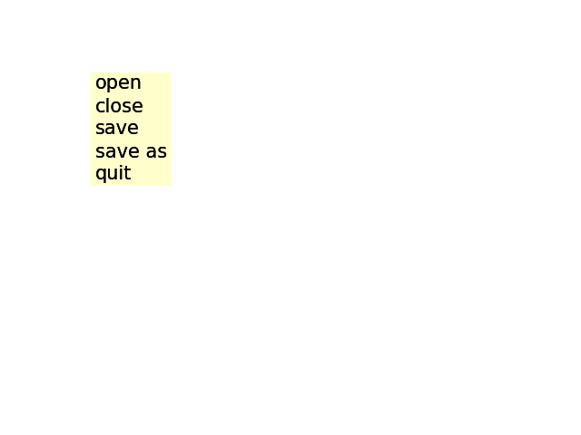

Note
Go to the end to download the full example code
Menu#
import matplotlib.pyplot as plt
import matplotlib.artist as artist
import matplotlib.patches as patches
from matplotlib.transforms import IdentityTransform
class ItemProperties:
def __init__(self, fontsize=14, labelcolor='black', bgcolor='yellow',
alpha=1.0):
self.fontsize = fontsize
self.labelcolor = labelcolor
self.bgcolor = bgcolor
self.alpha = alpha
class MenuItem(artist.Artist):
padx = 5
pady = 5
def __init__(self, fig, labelstr, props=None, hoverprops=None,
on_select=None):
super().__init__()
self.set_figure(fig)
self.labelstr = labelstr
self.props = props if props is not None else ItemProperties()
self.hoverprops = (
hoverprops if hoverprops is not None else ItemProperties())
if self.props.fontsize != self.hoverprops.fontsize:
raise NotImplementedError(
'support for different font sizes not implemented')
self.on_select = on_select
# Setting the transform to IdentityTransform() lets us specify
# coordinates directly in pixels.
self.label = fig.text(0, 0, labelstr, transform=IdentityTransform(),
size=props.fontsize)
self.text_bbox = self.label.get_window_extent(
fig.canvas.get_renderer())
self.rect = patches.Rectangle((0, 0), 1, 1) # Will be updated later.
self.set_hover_props(False)
fig.canvas.mpl_connect('button_release_event', self.check_select)
def check_select(self, event):
over, _ = self.rect.contains(event)
if not over:
return
if self.on_select is not None:
self.on_select(self)
def set_extent(self, x, y, w, h, depth):
self.rect.set(x=x, y=y, width=w, height=h)
self.label.set(position=(x + self.padx, y + depth + self.pady/2))
self.hover = False
def draw(self, renderer):
self.rect.draw(renderer)
self.label.draw(renderer)
def set_hover_props(self, b):
props = self.hoverprops if b else self.props
self.label.set(color=props.labelcolor)
self.rect.set(facecolor=props.bgcolor, alpha=props.alpha)
def set_hover(self, event):
"""
Update the hover status of event and return whether it was changed.
"""
b, _ = self.rect.contains(event)
changed = (b != self.hover)
if changed:
self.set_hover_props(b)
self.hover = b
return changed
class Menu:
def __init__(self, fig, menuitems):
self.figure = fig
self.menuitems = menuitems
maxw = max(item.text_bbox.width for item in menuitems)
maxh = max(item.text_bbox.height for item in menuitems)
depth = max(-item.text_bbox.y0 for item in menuitems)
x0 = 100
y0 = 400
width = maxw + 2*MenuItem.padx
height = maxh + MenuItem.pady
for item in menuitems:
left = x0
bottom = y0 - maxh - MenuItem.pady
item.set_extent(left, bottom, width, height, depth)
fig.artists.append(item)
y0 -= maxh + MenuItem.pady
fig.canvas.mpl_connect('motion_notify_event', self.on_move)
def on_move(self, event):
if any(item.set_hover(event) for item in self.menuitems):
self.figure.canvas.draw()
fig = plt.figure()
fig.subplots_adjust(left=0.3)
props = ItemProperties(labelcolor='black', bgcolor='yellow',
fontsize=15, alpha=0.2)
hoverprops = ItemProperties(labelcolor='white', bgcolor='blue',
fontsize=15, alpha=0.2)
menuitems = []
for label in ('open', 'close', 'save', 'save as', 'quit'):
def on_select(item):
print('you selected %s' % item.labelstr)
item = MenuItem(fig, label, props=props, hoverprops=hoverprops,
on_select=on_select)
menuitems.append(item)
menu = Menu(fig, menuitems)
plt.show()